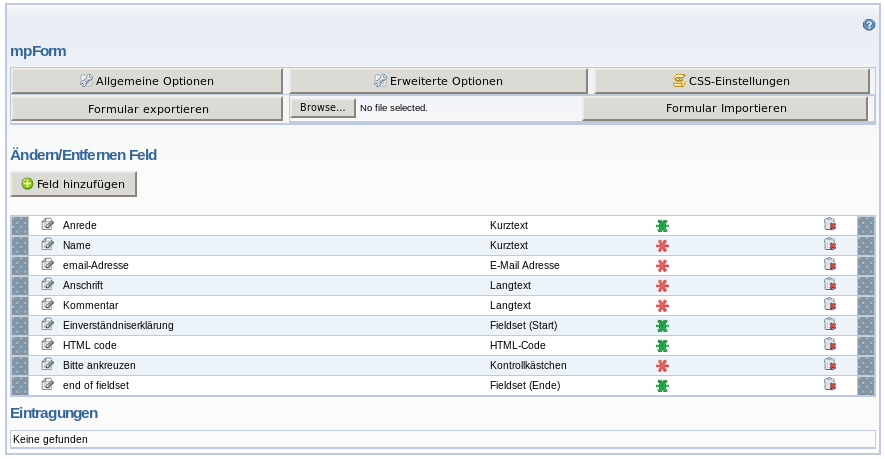

Deutsch
Deutsch
 English
EnglishDokumentations- und Hilfeseiten
Dies ist die umfangreiche Hilfe zum Modul MPForm. Die Themen wurden in verschiedene Schwierigkeitsgrade unterteilt, so daß Sie abschätzen können, ob Sie ein Thema besser auf später verschieben sollten oder sich schon herantrauen können. Folgende Schwierigkeitsgrade gibt es, sie sind auf jeder Seite oben rechts angegeben:
- A - Anfänger
- B - Bewanderter Anwender
- C - Codeschreiber
Schwierigkeitsgrad A
- Die Installation des Moduls MPForm
- Crashkurs - Das erste Formular erstellen
- Crashkurs Mehrseitige Formulare
- Nach dem Absenden des Formulars
Schwierigkeitsgrad B
- Referenz der Optionen
- Referenz der Feldtypen
- Hilfetexte für Benutzer
- Tabelle oder nicht?
- Standardformular installieren
Schwierigkeitsgrad C
Falls die Dokumentation eine Ihrer Fragen nicht beantworten konnte, hilft vielleicht die FAQ weiter.
Backendansicht
Wenn Sie das mpform Modul installiert haben und eine Seite mit einer mpform-Section angelegt haben, sieht diese in etwa so aus:

Im oberen Bereich gibt es Buttons mit denen man die allgemeinen und die erweiterten Optionen aufrufen
sowie die CSS-Dateien bearbeiten kann um das Erscheinungsbild des Formulars anzupassen.
Darunter folgt eine Zeile mit Elementen um das aktuelle Formular zu exportieren oder eine auf diese
Weise erzeugte Datei wieder importieren kann.
Darunter folgt der Bereich, mit dem Sie die Felder des Formulars verwalten. Bei einer neu angelegten
Section ist dieser Bereich leer. Mit dem Knopf "Feld hinzuügen" werden nacheinander
die verschiedenen Elemente für das Formular hinzugefügt. Später können Sie hier
die Reihenfolge mittels Drag&Drop ändern, Felder mit Klick auf den Papierkorb wieder löschen
oder mit Klick auf das Stiftsymbol bearbeiten. Der Stern zeigt an, ob das Feld aktiv/inaktiv/readonly oder
ein freiwilliges oder ein Pflichtfeld ist. Durch einen Klick darauf, kann man zwischen den Zuständen
weiterschalten.
Darunter folgt ein Bereich, in dem die Formulareintragungen landen. Diese können auf die gleiche
Weise bearbeitet/gelöscht werden.